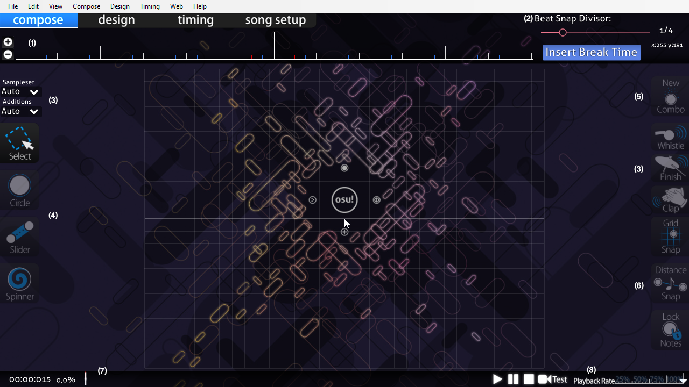
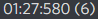

El editor es nuestra herramienta principal a la hora de crear un mapa. Es fundamental conocer sus funciones antes de comenzar tu aventura en el mapping.
Es muy recomendable aprenderse los atajos de teclado para optimizar el flujo de trabajo. (Irán apareciendo a medida que avances en la lectura)
Para empezar a usar el editor, arrastraremos un archivo de audio .ogg o .mp3 a la ventana de osu. Se creará el mapa y se nos abrirá el Song Setup, donde tendremos que llenar el metadata de la canción; nombre del artista, nombre de la canción, etc...
Pongamos de ejemplo la canción Zapatillas - El Canto del Loco.
- En Artist pondríamos El Canto del Loco.
- En Title pondríamos Zapatillas
- Beatmap Creator se rellena automáticamente con nuestro nombre de usuario.
- En Difficulty podemos darle un nombre a nuestro nivel. Podemos usar algo original o poner Hard, Insane...
- En Source podemos indicar si la canción es de un juego, de una serie... Este campo y el siguiente son opcionales.
- Tags, sirven para que la gente pueda encontrar tu mapa más fácilmente poniendo palabras como Rock Español, El Canto Del Loco... También puedes añadir tu nombre de usuario.
Continuando con la siguiente pestaña, tenemos Difficulty. Aquí podemos controlar variables que afectan a la jugabilidad del mapa:
En Audio podremos tocar el volumen de los hitsounds del mapa, no uséis nunca el 100% ya que es demasiado. Es recomendado usar entre 60-75%.
En la siguiente pestaña tenemos los colores, lo que hace la mayoria de gente es usar colores que encajen con el fondo. Tened en cuenta que existe una opción en osu llamada Ignore all beatmap skins, que si está activada, no se verán los colores personalizados.
La pestaña Design nos la podemos saltar ya que no es relevante.
En Advanced tenemos una opción que nos permite controlar cómo stackean las notas. Esto se suele dejar por defecto a no ser que quieras conseguir un resultado específico.
Una vez terminado el Song Setup, tendremos que rellenar el Timing. Básicamente ponerle el BPM y el offset al mapa.
El BPM o Beats per Minute son los golpes por minuto/tempo de la canción. Hay canciones con un BPM único (no cambia) y hay canciones con cambios de BPM. Es muy importante poner el BPM correcto ya que en caso de no hacerlo no podríamos mappear de forma precisa, ya que no sonaría sincronizado.
El Offset es el punto en el que empezaría el primer beat y sirve como punto de partida. Prueba a entrar en algún mapa que tengas descargado y comprueba el offset.
En el timing también tenemos el Slider Velocity o SV, que controla la velocidad de los sliders (y su tamaño). Este parámetro va de la mano del BPM.
Una de las cosas que más usaremos durante el proceso de mappeo, es el Timing Panel. Se abre pulsando F6 en el teclado.
Existen dos tipos de timing points. Los que controlan el BPM (timing points) y los que controlan el SV (inherited points).
Para crear un nuevo timing point, pulsaremos el botón .
Por defecto se genera un timing point, osea, un punto que controla el BPM. Si lo queremos convertir a un punto que controle el Slider Velocity, marcaremos esta opción:
Si queremos usar atajos, CTRL + P genera un timing point y CTRL + SHIFT + P genera un inherited point.
En la pestaña Style podemos activar el Kiai Mode, esto lo activaremos en las partes intensas del mapa. El kiai estará activo hasta el siguiente punto así que ten cuidado de que no se te olvide quitarlo/ponerlo.
Hecha la configuración inicial, podremos empezar a colocar objetos en el playfield.
El playfield es todo el espacio que tenemos para colocar objetos. Un error muy común en los mappers nóveles es poner todos los objetos cerca del centro y dejar el resto vacío, por eso es muy importante usar todo el playfield. De todas maneras, no os preocupéis que en la sección de estructura hablaremos de como evitar esto.
Está delimitado por el grid, que se puede controlar con el botón G . Existe la opción Grid Snap que nos permite colocar círculos ajustados al grid, se activa con T .
Alrededor del playfield nos saldrán un montón de iconos y botones que nos permiten realizar acciones como elegir el objeto que queremos colocar, poner hitsounds, etc...
La barra de menú superior contiene todas las opciones posibles.
Siguiendo hacia abajo, tenemos la timeline superior₍₁₎. Ahí apareceran los objetos y podremos moverlos en el tiempo, también apareceran los timing points. A la derecha de la timeline tenemos el Beat Snap Divisor₍₂₎, que nos permite
controlar el número de divisiones de un beat. Lo más común es 1/4.
Pulsando CTRL y moviendo la rueda del ratón podemos cambiarlo.
Con ALT y moviendo la rueda del ratón estando encima de la timeline podemos hacer zoom. Si se usa con el ratón encima del playfield modificaremos el Distance Snapping y si lo usamos fuera del playfield, podremos cambiar el volumen del juego. Así que tened cuidado con dónde usais este atajo.
Tanto (Sampleset y Additions)₍₃₎ a la izquierda como (Whistle, Finish y Clap)₍₃₎ a la derecha están relacionados con los hitsounds, que es un tema que abordaremos más adelante.
A la izquierda tenemos los 3 objetos principales; (Circle, Slider y Spinner y el Select)₍₄₎. Estos objetos son los que usaremos para representar los sonidos de la canción.
A la derecha está el New Combo₍₅₎, que sirve para resetear el conteo de notas y cambiar de color. Y un poco más abajo tenemos otros botones; (Grid Snap, Distance Snap, Lock Notes)₍₆₎.
Para finalizar tenemos la timeline inferior₍₇₎ y a la derecha el Playback Rate₍₈₎ para controlar la velocidad de reproducción de la canción. La timeline inferior muestra toda la canción, sin los objetos pero con los timing points y otra información de interés:
Podemos poner Bookmarks (marcadores, de color azul) con CTRL + B y quitarlo con CTRL + SHIFT + B .
También algo importante es el tiempo a la izquierda, que se puede copiar.
Cabe destacar también que si copias un objeto con CTRL + C y lo pegas en un chat de discord por ejemplo, sale el tiempo y el objeto:

En el menú superior tenemos la pestaña File, donde podremos realizar operaciones relacionadas con el mapa. La más importante sin duda es Save CTRL + S .
Existe una herramienta que detecta fallos en el mapa, AIMod. El atajo es CTRL + SHIFT + A . AIMod está obsoleto pero se usa para cosas puntuales.
No os asustéis con las advertencias y los errores porque normalmente no son de gran importancia y simplemente sirven de aviso.
Lo que sí son errores importantes son cosas como:
Si quieres aprender más sobre estos errores, consulta la wiki de osu.
Y si lo que quieres es comprobar si tu mapa esta listo para rankear, usa esta herramienta de la comunidad: Mapset Verifier.
Una vez terminado tu mapa, vas a querer subirlo a la lista pública de mapas de osu. Cuando subes el mapa, ese mapa tendrá la categoría Pending. Ten en cuenta que solo puedes tener 4 mapas pendientes al mismo tiempo (8 con supporter, ampliable con los mapas rankeados) y que tienes que esperar 4 semanas sin actualizar un mapa para que pase a Graveyard.
Si has subido un mapa y quieres actualizarlo, ya sea porque hayas cambiado algo o hayas terminado alguna parte, se actualiza subiéndolo otra vez.
En cambio si lo que quieres es compartir tu mapa con un amigo para que lo pruebe, sin subirlo a osu, puedes exportar el mapa y se te generará un archivo .osz.
Cada dificultad tiene un archivo .osu que contiene información del mapa. El editor es una representación gráfica de este archivo, por lo que siempre puedes cambiar algo en él y se actualizará en el editor.
Si estás haciendo una colaboración con alguien, es mejor pasaros 1 vez el mapa exportado y luego ir pasándoos el .osu.
Ritmo Activo es todo aquel sonido que el jugador debe clickar. Para representar ritmos activos, se usan los círculos y los sliderheads.
Ritmo Pasivo es todo aquello que suena de fondo pero que queremos representar, principalmente se usan los sliderends para esto.
Las canciones están compuestas por una (o varias) melodías principales, debemos enfocarnos en una a la hora de elegir el ritmo que queremos seguir. Esta prioridad puede ir cambiando a lo largo del mapa, según el instrumento dominante en cada sección.
Cuando estás empezando a mappear es recomendable elegir canciones simples con una melodía clara, por ejemplo los openings de animes suelen tener un ritmo simple. Mientras que géneros como el jazz o el metal son más complejos y deben evitarse al principio.
Ahora que conoces los tipos de ritmo y el ritmo que debes seguir, debes conocer los objetos con los que representarás esos ritmos.
Los atajos para cada objeto son: 2 Circle, 3 Slider, 4 Spinner.
Es el objeto más simple, ya que simplemente se compone de un cuerpo. Lo usaremos para representar los sonidos importantes.
El slider es un poco más complicado, tiene un sliderhead, un body y el sliderend.
El sliderhead lo usaremos para representar los sonidos fuertes mientras que los sliderends los usaremos para los sonidos secundarios.
El body es la forma que tendrá que
seguir el jugador para llegar de la cabeza a la cola.
Los sliders se pueden usar para mantener la densidad en una parte concreta, pero de eso hablaremos más adelante.
Es el menos usado ya que no tiene ninguna dificultad y solo sirve para representar alguna melodía antes de que empiece una sección o para darle un descanso al jugador.
Es una técnica que se usa para saturar una sección en concreto.
Consiste en añadir más objetos de los que realmente existen. Se suele utilizar para ir creando un buildup en el mapa y mantener la densidad.
Ejemplos: Yoiyami Hanabi, Odoru Mizushibuki.
Es una técnica que se usa para simplificar una sección en concreto.
Es todo lo contrario al overmapping, éste consiste en limitar el número de objetos para rebajar tensión o destacar sonidos instrumentales importantes.
Ejemplos: Notch Hell.
En todos los mapas los objetos fluyen entre sí, es decir, están "conectados". A esto se le llama flow.
Antes de conocer los tipos de flow, debemos conocer qué es lo que afecta al flow, el ángulo:
Se entiende como ángulo cerrado, cualquier patrón que no sobrepase los 90º. Son ángulos cómodos dentro de lo que cabe porque al llegar a la nota frenas y luego vas en la dirección contraria.
Los ángulos abiertos al contrario que los cerrados son de más de 90º y son incómodos de jugar, ya que tienes que frenar y luego continuar en la misma dirección.
Ahora que ya conoces el factor principal que afecta al flow, puedes aprender los tipos de flow con los que podemos jugar para darle un mejor movimiento a nuestro mapa.
Este flow se consigue haciendo que los objetos se conecten entre sí de forma circular, generando así un movimiento más "redondeado". Lo puedes hacer en el sentido de las agujas del reloj o invertido.
El flow lineal usa ángulos abiertos y como su nombre indica, es más lineal y con menos cambios de movimiento. En mapas con un spacing alto, es incómo de seguir.
Se basa en movimientos espontáneos y muy abruptos. También se puede ver en mapas con saltos incómodos.